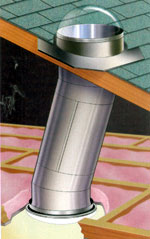
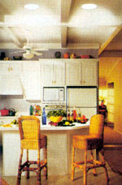
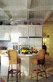

Thinking about installing skylights in your home? Consider letting the sun shine in with tubular skylights. These simple skylights typically consist of a clear, dome- like lens connected to a highly reflective piece of tubing. The lens gathers sunlight and transmits it into a room via a ceiling fixture that resembles a conventional ceiling light. Tubular skylights are ideal for retrofitting bathrooms, hallways, walk-in closets or any dark room of a house. Some models come with flexible tubes, so you can snake them around obstructions in attics. And you don't have to be television home-improvement pro Bob Vila to add them to your home - most do-it-yourselfers can install a unit in a couple of hours using hand tools.
These tiny dynamos - costing $200 to $500 uninstalled - can breathe life into rooms. With the right conditions, Solatube's 21-inch tubular skylight, for example, produces about 13,900 lumens - equivalent to the light output of six 48-inch, 40-watt fluorescent lights. Even on cloudy days, a tubular skylight can provide at least as much light as a 100-watt incandescent bulb - about 1,200 lumens. For maximum light, install tubular skylights on a south face of your roof.
For homes or businesses that require constant illumination, tubular skylights present a cost-saving option. In commercial spaces, where lights often are on eight or more hours per day, one 10-inch tubular skylight providing (on average) 4,200 lumens of light for eight hours a day will save a business owner about $70 per year on the electrical bill. Lights in homes usually are not on for that many hours, but noticeable savings are possible when tubular skylights replace track lighting or ceiling fixtures.
Other benefits of natural light cannot be measured in dollars. Unlike most light bulbs, tubular skylights provide full-spectrum light, which is easier to read by and causes less eye strain. A growing body of research shows that daylight increases worker productivity, helps students perform better and improves our sense of well-being. Research conducted by the Heschong Mahone Group, a consulting firm that focuses on building energy efficiency, found that second-through fifth-grade students with the most daylight in their classrooms progressed 20 percent faster on math tests and 26 percent faster on reading tests in one year than those students with the least natural light.
The growth of mold and mildew also are slowed by natural light. And, according to a 2002 study at the Baker Research Institute in Melbourne, Australia, sunlight causes our brains to produce more of the mood-lifting chemical serotonin. The study reinforced evidence that Seasonal Affective Disorder (SAD), a condition of depression or fatigue affecting some people in winter, is linked to lack of sunlight and lower serotonin levels.
Because an average person spends 90 percent of his or her life indoors, a lack of sunlight may affect daily life significantly.
Easy-to-install tubular skylights, however, can solve the problem, reduce a home's electrical demand, and best of all, help create a welcoming warmth.
Bristolite Tubular Skylights
(800) 854-8618
ODL Tubular Skylights
(800) 253-3900
Solatube Skylights
(800) 966-7652
Sun-Dome
(800) 596-8414
Velux
(800) 888-3589
|
 ODL With several joints, tubes for skylights can run around obstructions in an attic if necessary. |
 ODL Tubular skylights channel natural light into a kitchen. The next photo shows the same room, without sun tubes. |
 ODL Shows how the same room would look without sun tubes. |